My name is Mr Smartloli. Senior Kafka technology practitioners and researchers, and Kafka technology has a very deep understanding and insights, has a wealth of practical experience.
KAFKA EAGLE
A DISTRIBUTED AND HIGH-PERFORMANCE KAFKA MONITORING SYSTEM

Mr Smartloli
Kafka Proficient & Researchers
Latest Download
EFAK (Eagle For Apache Kafka®) 3.0.1 was released on Aug 30, 2022.
Additional resources for EFAK 3.0.1:
- Blog by author
- Reference Manual
- MD5( ae4769b97cc3cdc85f93d8037f4c67b5 )
INSTALL
GUIDES
CONTACT
> Introduce >
What is EFAK
Preface
EFAK (Eagle For Apache Kafka, previously known as Kafka Eagle). This topic provides a high-level look at EFAK, the EFAK process, and EFAK features. It’s a good place to start if you want to learn more about EFAK software. To jump right in, refer to Getting started.
EFAK is open source visualization and management software. It allows you to query, visualize, alert on, and explore your metrics no matter where they are stored. In plain English, it provides you with tools to turn your kafka cluster data into beautiful graphs and visualizations.
After installed EFAK like you do in Getting started, there are many possible things you might do next. It all depends on your needs and your use case.
KSQL
KSQL your kafka topic data through ad-hoc queries and dynamic drilldown. Able to quickly read message records in kafka topic.
Refer to KSQL for more information.
Alerts
If you are using EFAK alerting, then you can have alerts sent through a number of different alert notifiers, including DingDing, WeChat, Email, or Webhook.
Alert hooks allow you to create different notifiers with a bit of code if you prefer some other channels of communication. Visually define alert rules for your most important metrics.
Configure
If you are a EFAK administrator, then you will want to thoroughly familiarize yourself with EFAK configuration options.
Configuration covers both config files and environment variables. You can set up default ports, logging levels, zookeeper address, kafka security etc.
> Introduce >
Getting Started
Overview
This guide will help you get started and acquainted with EFAK. To learn more about EFAK in general, refer to What is EFAK?
Install EFAK
This step varies according to your computer operating system. Refer to the instructions for your OS in the Installation section for instructions.
Log in for the first time
- Open your web browser and go to http://localhost:8048/ url.
- On the login page, type admin for the username and password.
- Change your password.
Note
We strongly encourage you to follow EFAK best practices and change the default administrator password. Do not forget to record your credentials!
Next steps
Different user types will have different features. Some suggestions are listed below, or refer to What is EFAK? for a general overview of EFAK features.
All Users
All users might want to learn about:
Admins
Administrators might want to learn about:
> Installation >
Requirements
Overview
This page lists the minimum hardware and software requirements to install EFAK.
To run EFAK, you must have a supported operating system, hardware that meets or exceeds minimum requirements, a supported database, and a supported browser.
Supported operating systems
The following operating systems are supported for EFAK installation:
Note
We recommend that you install EFAK on the Linux operating system.
Hardware recommendations
EFAK does not use a lot of resources and is very lightweight in use of memory and CPU.
Minimum recommended memory: 2048 MB
Minimum recommended CPU: 1
Some features might require more memory or CPUs. Features require more resources include:
- Server side rendering of images
- Alerting
- Scheduler
Supported databases
EFAK requires a database to store its configuration data, such as users, data sources, and dashboards. The exact requirements depend on the size of the EFAK installation and features used.
EFAK supports the following databases:
- MySQL
- SQLite
By default, EFAK installs with and uses SQLite, which is an embedded database stored in the EFAK installation location.
Supported web browsers
EFAK is supported in the current version of the following browsers. Older versions of these browsers might not be supported, so you should always upgrade to the latest version when using EFAK:
- Chrome/Chromium
- Firefox
- Safari
- Microsoft Edge
- Internet Explorer 11
Note
Always enable JavaScript in your browser. Running EFAK without JavaScript enabled in the browser is not supported.
> Installation >
Install on Linux/macOS
Overview
This page explains how to install EFAK dependencies, download and install EFAK, get the service up and running on your Linux or macOS system, and the installation package details.
1. Download and install
You can download the EFAK source code on GitHub to compile and install by yourself, or by downloading a binary .tar.gz file.
Note on install
We recommend using the official compiled binary installation package.
2. Install JDK
If there is a JDK environment on the Linux server, this step can be ignored, and the installation of the next steps. If there is no JDK, first to the Oracle official website to download JDK.
JAVA_HOME Configure
Extract the binary installation package to the specified directory:
cd /usr/java
tar -zxvf jdk-xxxx.tar.gz
mv jdk-xxxx jdk1.8
vi /etc/profile
export JAVA_HOME=/usr/java/jdk1.8
export PATH=$PATH:$JAVA_HOME/bin
Then, we use the source /etc/profile to enable the configuration to take
effect immediately.
Note
If the authority is insufficient, please use the sudo command.
Finally, we input java -version, according to the following information:
Note
java version "1.8.0_60"
Java(TM) SE Runtime Environment (build 1.8.0_60-b27)
Java HotSpot(TM) 64-Bit Server VM (build 25.60-b23, mixed mode)
3. Extract EFAK
Here we extract to '/data/soft/new' directory and extract:
tar -zxvf efak-xxx-bin.tar.gzrm -rf efak
mv efak-xxx efakThen, configure EFAK profile
vi /etc/profile
export KE_HOME=/data/soft/new/efak
export PATH=$PATH:$KE_HOME/binFinally, we use the source /etc/profile to enable the configuration to
take
effect immediately.
4. Configure EFAK system file
Configure EFAK according to the actual situation of its own Kafka cluster, For example, zookeeper address, version type of Kafka cluster (zk for low version, kafka for high version), Kafka cluster with security authentication enabled etc.
cd ${KE_HOME}/conf
vi system-config.properties
# Multi zookeeper&kafka cluster list -- The client connection address of the Zookeeper cluster is set here
efak.zk.cluster.alias=cluster1,cluster2
cluster1.zk.list=tdn1:2181,tdn2:2181,tdn3:2181
cluster2.zk.list=xdn1:2181,xdn2:2181,xdn3:2181
# Add zookeeper acl
cluster1.zk.acl.enable=false
cluster1.zk.acl.schema=digest
cluster1.zk.acl.username=test
cluster1.zk.acl.password=test123
# Kafka broker nodes online list
cluster1.efak.broker.size=10
cluster2.efak.broker.size=20
# Zkcli limit -- Zookeeper cluster allows the number of clients to connect to
# If you enable distributed mode, you can set value to 4 or 8
kafka.zk.limit.size=16
# EFAK webui port -- WebConsole port access address
efak.webui.port=8048
######################################
# EFAK enable distributed
######################################
efak.distributed.enable=false
# master worknode set status to master, other node set status to slave
efak.cluster.mode.status=slave
# deploy efak server address
efak.worknode.master.host=localhost
efak.worknode.port=8085
# Kafka offset storage -- Offset stored in a Kafka cluster, if stored in the zookeeper, you can not use this option
cluster1.efak.offset.storage=kafka
cluster2.efak.offset.storage=kafka
# Whether the Kafka performance monitoring diagram is enabled
efak.metrics.charts=false
# EFAK keeps data for 30 days by default
efak.metrics.retain=30
# If offset is out of range occurs, enable this property -- Only suitable for kafka sql
efak.sql.fix.error=false
efak.sql.topic.records.max=5000
# Delete kafka topic token -- Set to delete the topic token, so that administrators can have the right to delete
efak.topic.token=keadmin
# Kafka sasl authenticate
cluster1.efak.sasl.enable=false
cluster1.efak.sasl.protocol=SASL_PLAINTEXT
cluster1.efak.sasl.mechanism=SCRAM-SHA-256
cluster1.efak.sasl.jaas.config=org.apache.kafka.common.security.scram.ScramLoginModule required username="admin" password="admin-secret";
# If not set, the value can be empty
cluster1.efak.sasl.client.id=
# Add kafka cluster cgroups
cluster1.efak.sasl.cgroup.enable=false
cluster1.efak.sasl.cgroup.topics=kafka_ads01,kafka_ads02
cluster2.efak.sasl.enable=true
cluster2.efak.sasl.protocol=SASL_PLAINTEXT
cluster2.efak.sasl.mechanism=PLAIN
cluster2.efak.sasl.jaas.config=org.apache.kafka.common.security.plain.PlainLoginModule required username="admin" password="admin-secret";
cluster2.efak.sasl.client.id=
cluster2.efak.sasl.cgroup.enable=false
cluster2.efak.sasl.cgroup.topics=kafka_ads03,kafka_ads04
# Default use sqlite to store data
efak.driver=org.sqlite.JDBC
# It is important to note that the '/hadoop/kafka-eagle/db' path must be exist.
efak.url=jdbc:sqlite:/hadoop/kafka-eagle/db/ke.db
efak.username=root
efak.password=smartloli
# (Optional) set mysql address
#efak.driver=com.mysql.jdbc.Driver
#efak.url=jdbc:mysql://127.0.0.1:3306/ke?useUnicode=true&characterEncoding=UTF-8&zeroDateTimeBehavior=convertToNull
#efak.username=root
#efak.password=smartloli5. Start the EFAK server (Standalone)
In the $KE_HOME/bin directory, there is a ke.sh script
file. Execute the start
command as follows:
cd ${KE_HOME}/bin
chmod +x ke.sh
ke.sh startAfter that, when the EFAK server is restarted or stopped, execute the following command:
ke.sh restart
ke.sh stopAs shown in the following figure:
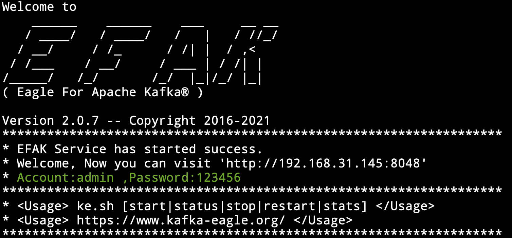6. Start the EFAK server (Distributed)
In the $KE_HOME/bin directory, there is a ke.sh script
file. Execute the start
command as follows:
cd ${KE_HOME}/bin
# sync efak package to other worknode node
# if $KE_HOME is /data/soft/new/efak
for i in `cat $KE_HOME/conf/works`;do scp -r $KE_HOME $i:/data/soft/new;done
# sync efak server .bash_profile environment
for i in `cat $KE_HOME/conf/works`;do scp -r ~/.bash_profile $i:~/;done
chmod +x ke.sh
ke.sh cluster startAfter that, when the EFAK server is restarted or stopped, execute the following command:
ke.sh cluster restart
ke.sh cluster stopAs shown in the following figure:
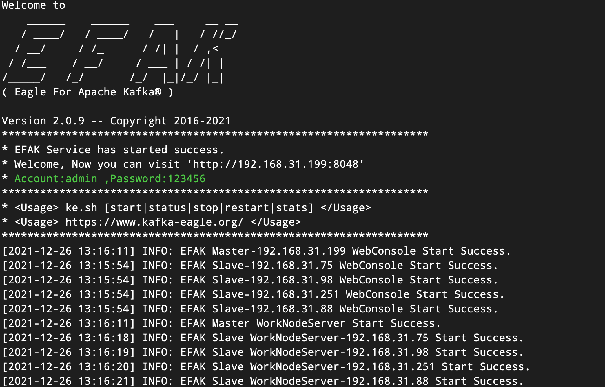 > Installation >
Install on Windows
Overview
This page explains how to install EFAK dependencies, download and install EFAK, get the service up and running on your Windows system, and the installation package details.
1. Install JDK
If there is a JDK environment on the Linux server, this step can be ignored, and the installation of the next steps. If there is no JDK, first to the Oracle official website to download JDK.
JAVA_HOME Configure
Run the downloaded *.exe file installation package directly, then configure environment variables:
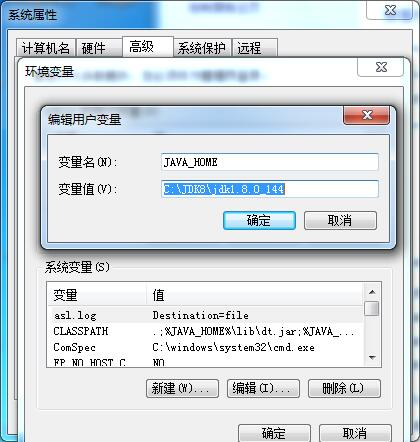2. Check JDK
Finally, we input java -version, according to the following information:

3. KE_HOME Configure
Configure environment variables,As shown in the following figure:

4. Start the EFAK server
Go to the %KE_HOME%\bin directory and click the 'ke.bat' file.
> Installation >
Configuration
Overview
EFAK has a number of configuration options that you can specify in a
.properties
configuration file or specified using environment variables.
Note
You must restart EFAK for any configuration changes to take effect.
Config file locations
Do not rename system-config.properties! EFAK defaults are stored in this
file.
Base Common
| Name | Default | Describe |
|---|---|---|
| efak.zk.cluster.alias | cluster1,cluster2 | Kafka multi cluster alias attribute. |
| cluster1.zk.list | ke01:2181,ke02:2181,ke03:2181/cluster1 | Kafka cluster1 zookeeper address. |
| cluster2.zk.list | ke01:2181,ke02:2181,ke03:2181/cluster2 | Kafka cluster2 zookeeper address. |
| kafka.zk.limit.size | 25 | EFAK maximum number of connections for the Zookeeper client. |
| cluster1.efak.broker.size | 10 | Kafka broker size online list. |
| cluster2.efak.broker.size | 20 | Kafka broker size online list. |
| efak.webui.port | 8048 | EFAK webui port. |
| cluster1.efak.offset.storage | kafka | Kafka offsets stored in kafka. |
| cluster1.efak.offset.storage | zk | Kafka offsets stored in zookeeper. |
| efak.metrics.charts | false | EFAK default disable metrics. |
| efak.metrics.retain | 30 | EFAK default retain metrics data. |
| efak.sql.fix.error | false | EFAK default disable fixed kafka sql query error. |
| efak.sql.topic.records.max | 5000 | EFAK SQL query topic max records. |
| efak.topic.token | keadmin | EFAK delete topic token. |
Database Property
MySQL
| Name | Default | Describe |
|---|---|---|
| efak.driver | com.mysql.jdbc.Driver | EFAK store database driver. |
| efak.url | jdbc:mysql://127.0.0.1:3306/ke3?useUnicode=true&characterEncoding=UTF-8&zeroDateTimeBehavior=convertToNull | EFAK store database url. |
| efak.username | root | EFAK store database username. |
| efak.password | 123456 | EFAK store database password. |
SQLite
| Name | Default | Describe |
|---|---|---|
| efak.driver | org.sqlite.JDBC | EFAK store database driver. |
| efak.url | jdbc:sqlite:/hadoop/kafka-eagle/db/ke.db | EFAK store database url. |
| efak.username | root | EFAK store database username. |
| efak.password | 123456 | EFAK store database password. |
> Installation >
Security
Overview
If your Kafka cluster has set security authentication, you need to set the corresponding security authentication information in EFAK.
- SASL/GSSAPI (Kerberos)
- SASL/PLAIN
- SASL/SCRAM-SHA-256
- SASL/OAUTHBEARER
- SSL
- CGROUPS (SASL & SSL)
Kerberos
EFAK system-config.properties file setting:
######################################
# kafka sasl authenticate
######################################
cluster1.efak.sasl.enable=true
cluster1.efak.sasl.protocol=SASL_PLAINTEXT
cluster1.efak.sasl.mechanism=GSSAPI
cluster1.efak.sasl.jaas.config=com.sun.security.auth.module.Krb5LoginModule required useKeyTab=true storeKey=true keyTab="/etc/security/keytabs/kafka_client.keytab" principal="kafka-eagle.org@EXAMPLE.COM";
# make sure there is a local ticket cache "klist -l" to view
# cluster1.efak.sasl.jaas.config=com.sun.security.auth.module.Krb5LoginModule required useTicketCache=true renewTicket=true serviceName="kafka-eagle.org";
# if your kafka cluster doesn't require it, you don't need to set it up
# cluster1.efak.sasl.client.id=PLAIN
EFAK system-config.properties file setting:
######################################
# kafka sasl authenticate
######################################
cluster1.efak.sasl.enable=true
cluster1.efak.sasl.protocol=SASL_PLAINTEXT
cluster1.efak.sasl.mechanism=PLAIN
cluster1.efak.sasl.jaas.config=org.apache.kafka.common.security.plain.PlainLoginModule required username="kafka" password="kafka-eagle";
# if your kafka cluster doesn't require it, you don't need to set it up
# cluster1.efak.sasl.client.id=SCRAM-SHA-256
EFAK system-config.properties file setting:
######################################
# kafka sasl authenticate
######################################
cluster1.efak.sasl.enable=true
cluster1.efak.sasl.protocol=SASL_PLAINTEXT
cluster1.efak.sasl.mechanism=SCRAM-SHA-256
cluster1.efak.sasl.jaas.config=org.apache.kafka.common.security.scram.ScramLoginModule required username="kafka" password="kafka-eagle";
# if your kafka cluster doesn't require it, you don't need to set it up
# cluster1.efak.sasl.client.id=OAUTHBEARER
If you use this authentication, you need to make sure that your Kafka cluster version
is after 2.x, EFAK system-config.properties file setting:
######################################
# kafka sasl authenticate
######################################
cluster1.efak.sasl.enable=true
cluster1.efak.sasl.protocol=SASL_PLAINTEXT
cluster1.efak.sasl.mechanism=OAUTHBEARER
cluster1.efak.sasl.jaas.config=org.apache.kafka.common.security.oauthbearer.OAuthBearerLoginModule required unsecuredLoginStringClaim_sub="kafka-eagle";
# if your kafka cluster doesn't require it, you don't need to set it up
# cluster1.efak.sasl.client.id=SSL
If you use this authentication(ssl), you need to make sure that your Kafka cluster
version is after 2.x, EFAK system-config.properties file
setting:
######################################
# kafka ssl authenticate
######################################
cluster3.efak.ssl.enable=true
cluster3.efak.ssl.protocol=SSL
# kafka server.properties "ssl.truststore.location" value
cluster3.efak.ssl.truststore.location=/data/kafka/ssl/certificates/kafka.truststore
# kafka server.properties "ssl.truststore.password" value
cluster3.efak.ssl.truststore.password=ke123456
# kafka server.properties "ssl.keystore.location" value
cluster3.efak.ssl.keystore.location=/data/kafka/ssl/certificates/kafka.keystore
# kafka server.properties "ssl.keystore.password" value
cluster3.efak.ssl.keystore.password=ke123456
# kafka server.properties "ssl.endpoint.identification.algorithm" value
cluster3.efak.ssl.endpoint.identification.algorithm=https
# kafka server.properties "ssl.key.password" value
cluster3.efak.ssl.key.password=ke123456CGroups
When using permission authentication (such as SASL Or SSL), the user you are using only supports managing a limited number of kafka topics. You can enable the following properties:
# SASL
cluster1.efak.sasl.cgroup.enable=true
cluster1.efak.sasl.cgroup.topics=topic1,topic2,topic3
# SSL
cluster2.efak.ssl.cgroup.enable=true
cluster2.efak.ssl.cgroup.topics=topic4,topic5,topic6 > Quick Start >
Dashboard
Overview
A dashboard is a set of one or more panels organized and arranged into one or more rows. EFAK ships with a variety of Panels. EFAK makes it easy to get the right queries, and customize the display properties so that you can view kafka topic data the perfect dashboard for your need.
Dashboard UI
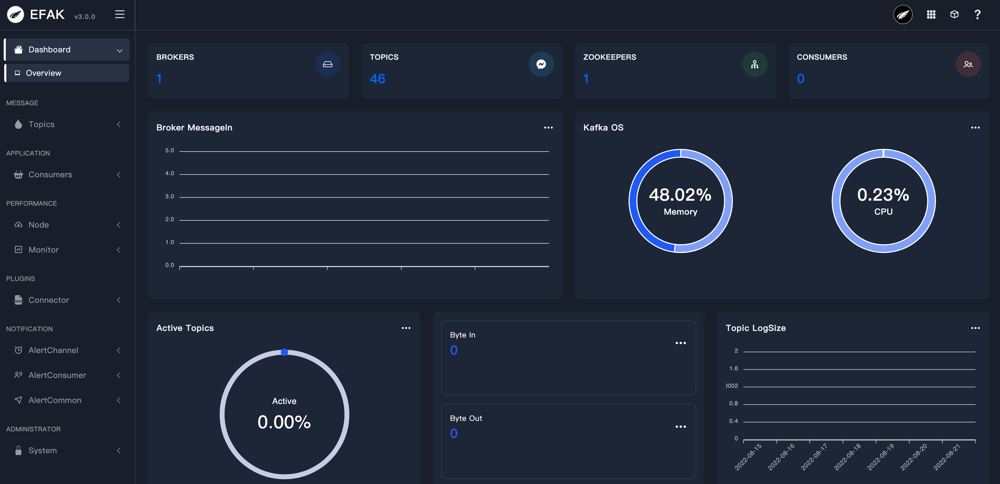- Kafka brokers
- All topics
- Zookeepers
- All consumer applications
- Broker memory usage
- Topic top10 logsize
- Topic top10 capacity
> Quick Start >
Topics
Overview
Topic columns under the current contains the creation and list, through the creation of a module can create a custom partition and the number of backup Topic. As shown in the following figure:
Create Topic

List Topic
The module follows all the Topic in the Kafka cluster, including the number of partitions, create time, and modify the Topic, as shown in the following figure:
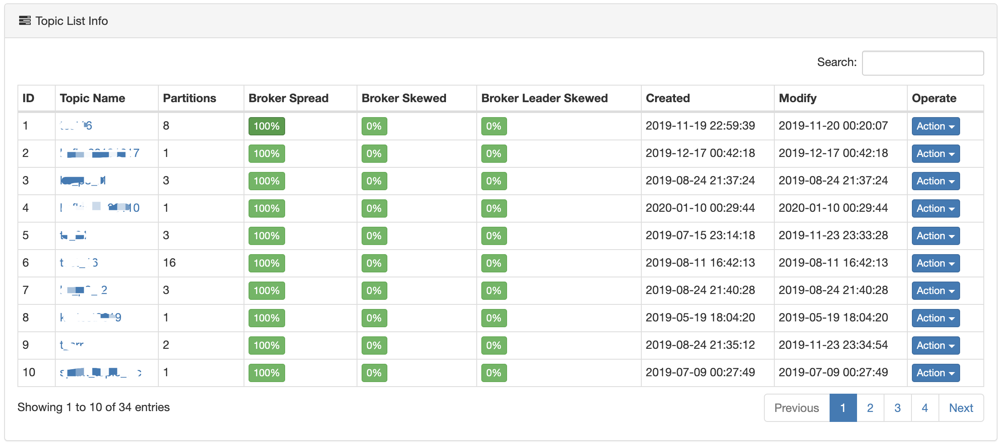Topic Detail
Each Topic is corresponding to a hyperlink, you can view the details of the Topic,
such as:
partition index number, Leader, Replicas and
Isr, as shown
in the figure below:

Topic Config
Select kafka topic, then edit the topic config, such as clean topic data, modify topic config, describe topic config etc:

Topic Hub
It is used to migrate the topic data or balance the expanded broker.
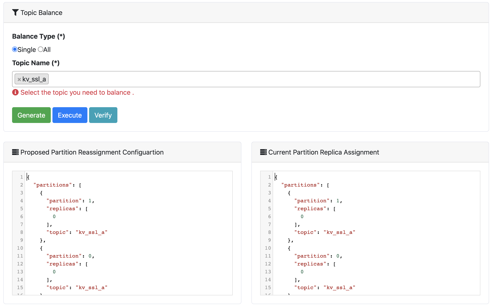 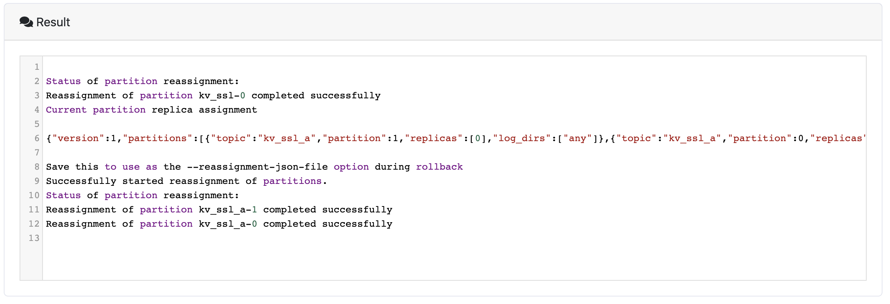 > Quick Start >
Consumers
Overview
The module shows the Topic information of consumer records, which contains the following contents:
- Running
- Pending
- Shutdown
- Active Topic Graph
As shown in the following figure:

Each consumer group name of a is a hyperlink, show details of consumption, as shown below:
 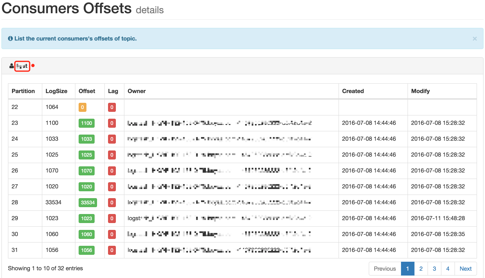
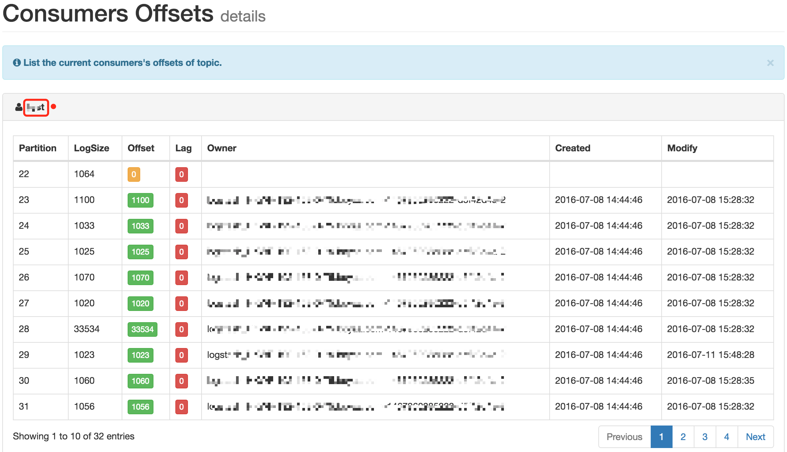
Click on the Topic name that is being consumed, showing the consumption
and production rate
diagram of the Topic, as shown below:
> Quick Start >
Cluster
Overview
This module displays Kafka cluster information and Zookeeper cluster information, including the following:
- Kafka broker host, IP, memory, version etc.
- Zookeeper host, IP, status, version etc.
As shown in the following figure:
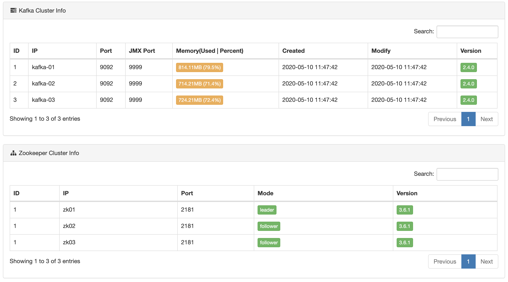 > Quick Start >
Alarm
Overview
New alarm module, to pay attention to their own Topic alarm settings. No consumer information when Topic, more than the threshold, the alarm. At present, the alarm way through the message to the alarm, set as shown in the following figure:
Support IM
In addition to supporting email or webhook alerts, EFAK
also supports im
alerts, such as DingDing and WeChat.
Mail Or WebHook
First of all, it is necessary to configure alarm channels, select different alarm modes, and divide different alarm groups.
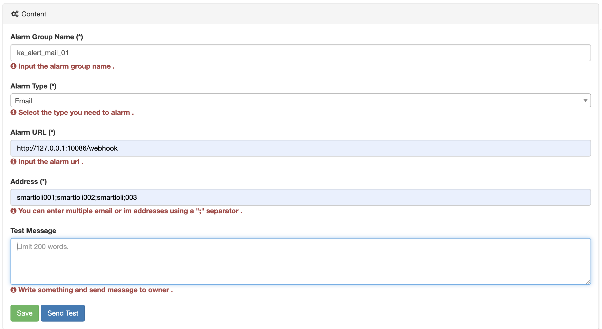It should be noted that EFAK alarm mail uri:
http://127.0.0.1:10086/emailEmail or Webhook restful api server uri:
http://127.0.0.1:10086/email?address="xxx@gmail.com"&msg="alarm msg"Api server uri java code:
@RestController
public class MailController {
@RequestMapping(value="/email", method = RequestMethod.POST)
public String sendPostMail(HttpServletRequest request) {
// Send Alarm Message Interface
System.out.println("[PUT] address: " + request.getParameter("address") + ",msg: " + request.getParameter("msg"));
return "OK";
}
}Mail By ServerAddress
If you have the username and password of the mail server, you can use the following method to set the information about your mail server into the following JsonObject
{"host":"smtp.126.com","port":"465","sa":"ke","username":"ke@126.com","password":"*********","enable_ssl":true}DingDing

> Quick Start >
Shell
Overview
$KE_HOME/bin/ke.sh The following commands are included in the startup
script:
| Command | Describe |
|---|---|
| ke.sh start | Start the EFAK server. |
| ke.sh status | View the EFAK running status. |
| ke.sh stop | Stop the EFAK server. |
| ke.sh restart | Restart the EFAK server. |
| ke.sh stats | View the EFAK number of handles in the linux os. |
| ke.sh find [ClassName] | Find the location of the class name in jar. |
| ke.sh gc | View the EFAK process gc. |
| ke.sh version | View the EFAK version. |
| ke.sh jdk | View EFAK installed jdk details. |
| ke.sh sdate | View EFAK startup date. |
| ke.sh cluster start | View EFAK cluster distributed startup. |
| ke.sh cluster status | View EFAK cluster distributed status. |
| ke.sh cluster stop | View EFAK cluster distributed stop. |
| ke.sh cluster restart | View EFAK cluster distributed restart. |
> Quick Start >
ZkCli
Overview
Zookeeper client command operation, currently only supports ls,
delete, get command
operation, the command does
not support, as shown below:

> Quick Start >
Multi-Cluster
Overview
This module displays Multi Kafka clusters information and Zookeeper clusters information, including the following:
- cluster1
- cluster2
- cluster3
- ...
As shown in the following figure:
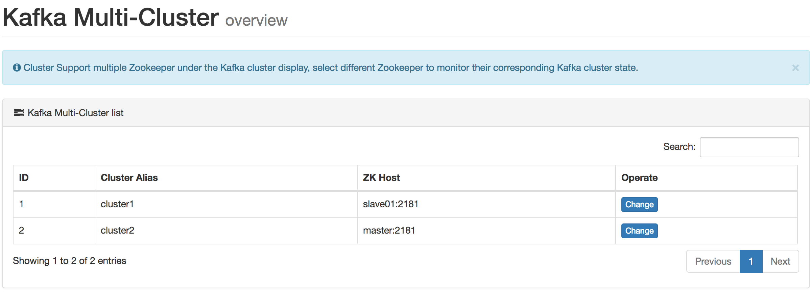 > Quick Start >
KSQL
Overview
Use the SQL statement to the news data visualization in topic, for SQL queries, and table names field need to use double quotes to mark, example SQL is as follows:
select * from ke_test_topic where `partition` in (0,1,2) limit 100As shown in the following figure:
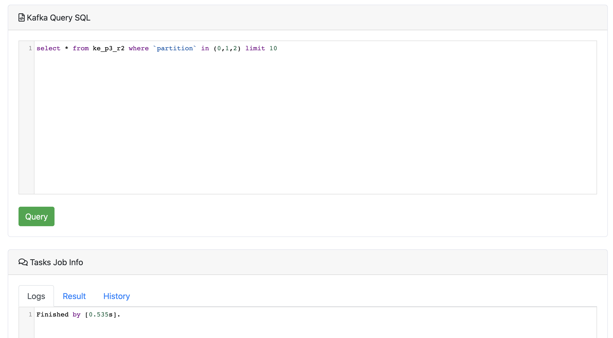DataSets
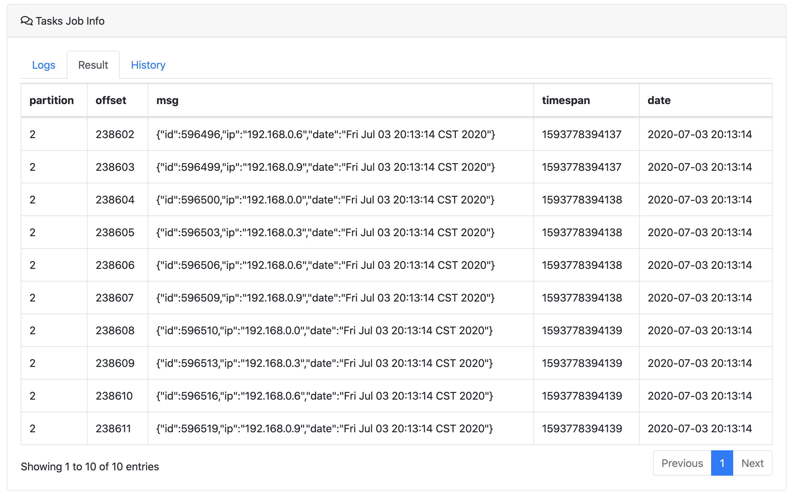Note
Access to topic message data, depending on the underlying interface record of the earliest and latest offset, the default display up to 5000 records.
Parse JSONObject Or JSONArrays
Kafka topic datasets like this:
[{"id":123,"name":"smartloli"},{"id":456,"name":"smartloli2"},{"id":789,"name":"smartloli3"}]Then you can use sql query topic like this:
select JSONS(msg,'name') from topic_name where `partition` in (0) limit 10When Kafka topic datasets like this:
{"id":123,"name":"smartloli001"}Then you can use sql query topic like this:
select JSON(msg,'name') from topic_name where `partition` in (0) limit 10Using and syntax in SQL
select JSON(msg,'name') from topic_name where `partition` in (0) and JSON(msg,'name') = 'smartloli001' limit 10Filter Query [where ... and]
Kafka topic datasets like this:
kafka-eagle-01
kafka-eagle-02
kafka-eagle-02
kafka-eagle-03
kafka-eagle-03
...
kafka-eagle-03
kafka-eagle-04Then you can use sql query topic like this:
select * from topic_name where `partition` in (0) and msg = 'kafka-eagle-03' limit 10Using like syntax in SQL
select * from topic_name where `partition` in (0) and msg like 'kafka-eagle%' limit 10Or
select * from topic_name where `partition` in (0) and msg like '%kafka-eagle%' limit 10 > Quick Start >
System
Overview
Controls permissions for actions such as deletion, editing, etc., and the browsing operation is not controlled.
Resource
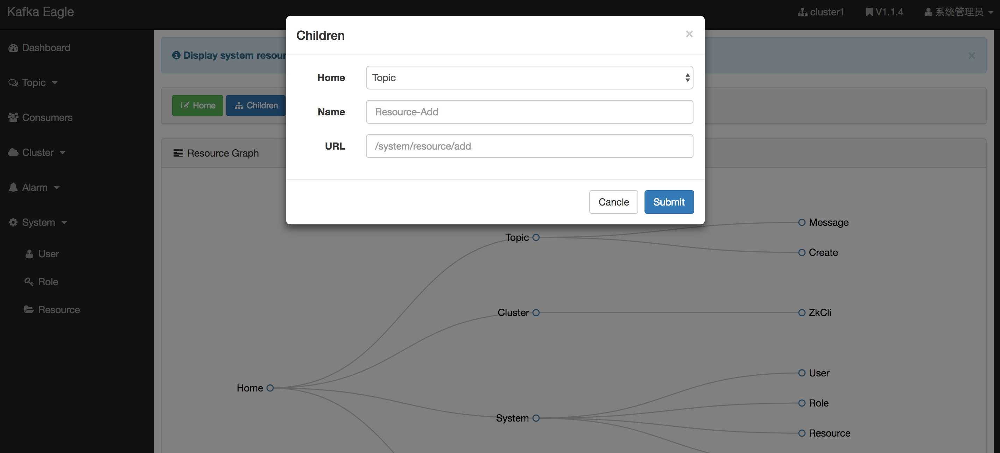Role
Assign an accessible directory to each role.

User
Add users, fill in the corresponding user information, click Submit, and then fill in the mailbox will receive the corresponding login information (login name and password).
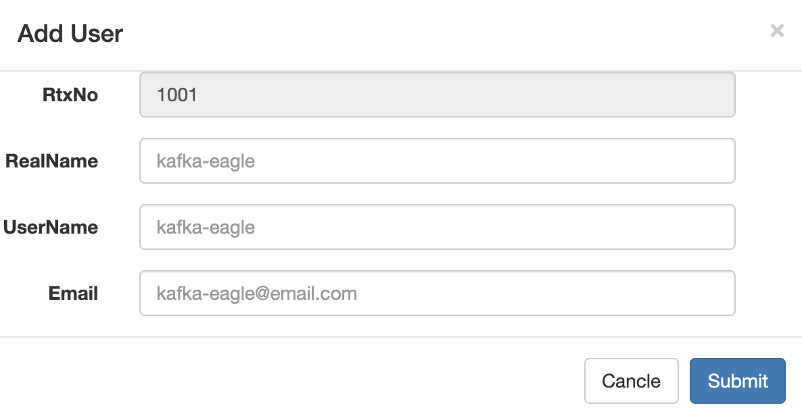 > Quick Start >
Metrics
Overview
Through JMX to obtain data, monitor the Kafka client, the production side, the number of messages, the number of requests, processing time and other data to visualize performance.

If your data is empty, check that the port of JMX is started . If you do not start, you can edit the script before you start
vi kafka-server-start.sh
...
if [ "x$KAFKA_HEAP_OPTS" = "x" ]; then
export KAFKA_HEAP_OPTS="-server -Xms2G -Xmx2G -XX:PermSize=128m -XX:+UseG1GC -XX:MaxGCPauseMillis=200 -XX:ParallelGCThreads=8 -XX:ConcGCThreads=5 -XX:InitiatingHeapOccupancyPercent=70"
export JMX_PORT="9999"
fiZookeeper
When your zookeeper version is after 3.5, you need to open zkcli permission to repair the script content
vi zkServer.sh
...
// zookeeper enable client commands
ZOOMAIN="-Dzookeeper.4lw.commands.whitelist=* ${ZOOMAIN}"Trend
Observe Kafka index data according to different dimensions.

Brokers Metrics
EFAK monitoring summarizes the node data of the whole cluster. Through the monitoring chart, you can observe the running state of the cluster.
| Quota | Message |
|---|---|
| MessagesInPerSec | Broker aggregate incoming message rate. |
| BytesInPerSec | Broker aggregate incoming byte rate. |
| BytesOutPerSec | Broker aggregate outgoing byte rate. |
| BytesRejectedPerSec | Broker aggregate rejected byte rate. |
| FailedFetchRequestsPerSec | Broker fetch request rate for requests that failed. |
| FailedProduceRequestsPerSec | Produce request rate for requests that failed. |
| ProduceMessageConversionsPerSec | The number of produce message conversions per second for the broker. |
| ReplicationBytesInPerSec | Byte in rate from other brokers. |
| ReplicationBytesOutPerSec | Byte out rate to other brokers. |
| TotalFetchRequestsPerSec | Fetch request rate. |
| TotalProduceRequestsPerSec | Produce request rate. |
| FreePhysicalMemorySize | Broker free memory size. |
> Quick Start >
BScreen
Overview
We enter http://host:port/tv through the browser, access to the EFAK
BScreen page. The
page contains the following:
- Kafka Mem & CPU Chart
- Brokers ByteIn & ByteOut
- Topics Producer LogSize Monitor
- Cluster Nodes & Topics & Consumers etc
As shown in the following figure:

> Architecture >
Introduction
Overview
In the development work, consumer in the Kafka cluster message, data change is our concern, when the premise of business is not complicated, we can use the Kafka command to provide tools with Zookeeper client tools, you can easily finish our work. With the complexity of the business, increase Group and Topic, then we use Kafka to provide command tools, already felt powerless, then the Kafka monitoring system at the moment is particularly important, we need to observe the details of consumer applications.
There are so many excellent open source monitor systems in the industry. In the early stage, we were useing open source system, but with the rapid development of business, as well as some specific requirements of Internet Co, the current open source monitor systems does not quite meet the criteria of performance, extendibility and efficiency.
Therefore, in the past time, starting from the needs of the Internet Co, starting from the DEVS you use experience and feedback, combined with some of the industry's large open source Kafka monitoring system, starting with some thoughts on monitoring, we were designed and developed of the kafka monitoring system. So we called EFAK.
Note
EFAK aims at becoming a distributed and high-performance monitoring system.
Background
There are four reasons to design EFAK system:
- Apache Kafka does not officially provide monitoring systems or pages.
- Open source Kafka monitoring system has too few functions or suspension of maintenance.
- It is difficult to configure and use the existing monitoring system.
- Some monitoring system can not satisfy integration with existing IM, such as wechat or dingding.

> Architecture >
Data Collection
Overview
Monitor data is essential in a monitor system for the following analysis, graph, and alarm. How does EFAK deal with the problem of data collection?
For Kafka, that we can collect the following data
- Kafka broker common machine loading information: memory, cpu, IP, version etc.
- Service monitor data: TPS, QPS, RT etc.
- Applications monitor: groups, consumers, producers, topics etc.
That's quite a lot, which come from different interfaces, such as JMX, Kafka API, internal topic etc.
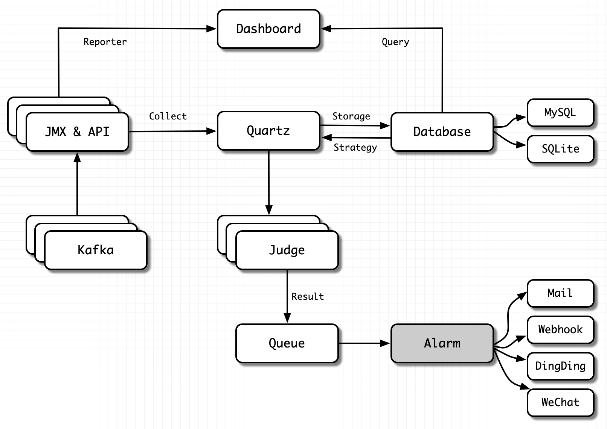Let's focus on the three representative categories above.
Kafka Machine Loading Information
The collection of this category is universal. We can collect data through Kafka broker JMX, Kafka API etc.
It should be noted here that if data acquisition fails, it is necessary to insist on whether the network is limited, such as firewall policy.
We can test whether the corresponding port is available on the server where EFAK is deployed. The command is as follows:
# Test Kafka Broker Server
telnet kafka01 9092
# Test Kafka Broker JMX
telnet kafka01 9999
# Test Zookeeper Server
telnet zk01 2181For the introduction of JMX, please visit here.
Note
For Kafka Broker JMX port, it can be set to any available port on the server, and EFAK will automatically identify.
Service Monitor Data
Service indicators such as QPS, TPS and RT reflect the performance of Kafka Broker services. These indicators are collected by different timers. After has finished collection, the collected data (from JMX or API) is stored in the database (such as MySQL or SQLite). Finally, the data is rendered in the dashboard to form a friendly graph web page.
Note
When rendering the graphics, if the page display is abnormal, the static resources are not loaded successfully. The reason may be that the server has nginx installed, which limits the size of static resources (such as CSS, JavaScript, etc.). Users can modify the limit size of nginx on the server.
You can check if static resources are limited:
Step1
Open the browser review element, switch to the network module, and check
Disable cache.
Step2
Switch to the console module, refresh the browser, and observe whether the console module is abnormal. If there is an exception, you can use the search engine to solve it according to the exception prompt.
Applications Monitor
Indicators such as consumer groups, consumers, producers, and topics reflect the health of client programs. We can analyze whether our application is normal by observing these indicators on the EFAK web page.
We don't need to make any settings for these indicator data. After the client program starts, EFAK will automatically identify, collect and store the data.
Note
If the EFAK log throws an exception when collecting data, check whether the configuration file setting of EFAK is correct.
If your Kafka version is less than 0.10.x (0.8.x, or 0.9.x etc.), set as follows:
# Set Kafka Offsets Storage
cluster1.efak.offset.storage=zkIf your Kafka version is greater than 0.10.x (1.x, or 2.x etc.), set as follows:
# Set Kafka Offsets Storage
cluster1.efak.offset.storage=kafka > Architecture >
Core Modules
Overview
The monitor system is the most important link of the operation process even the lifecycle of a product. It sends alarms before accidents and provides detailed data for the investigation of issues. There are many choices of open source kafka monitor system as a muture product in operation industry.
So, we can look up EFAK feature and architecture.
Feature
EFAK consists of dashboard, collect, storage, alarm, authority authentication and other core feature modules. Each feature module is responsible for the following:
- Dashboard: Responsible for visualizing the performance indicators of Kafka cluster , analyzing the runtime of consumer and producer applications.
- Collect: Responsible for collecting performance indicators of all Kafka and service indicators of consumers and producers through timers.
- Storage: Responsible for storing all collected data, user metadata, user alarm data. Currently supports MySQL and SQLite.
- Alarm: Responsible for alarm exception indicators, such as broker shutdown, consumer blocking, producer write exception, etc. Currently supports Mail, DingDing, and WeChat.
- Authentication: Responsible for authority authentication and distinguish the use authority of different users. For example, the administrator can use all feature.
> Architecture >
Advanced
Overview
EFAK has very low requirements for server hardware. Only 1 core of CPU and 2GB of memory can run, and it supports the whole platform (Linux, macOS, Windows). At the same time, EFAK can manage multiple Kafka clusters (without installing a EFAK service for each Kafka cluster).
Advanced
KSQL
Users can easily use KSQL, can quickly query the data in topic.
Consumers
Through the Consumers module. Users can view the runtime of consumer programs intuitively, and analyze and judge the health of applications with more graphs.
Bash
Manage and view EFAK process service status through ke.sh script command.
JDK Encoding
When you deploy EFAK on the server where it is installed, the encode of the installed JDK is not UTF-8. When you use the mock feature of EFAK, you will get an exception when sending data in Unicode encoding format.
Then, You can run the following command:
ke.sh jdkGC
You can also view the process of EFAK by executing gc command:
ke.sh gc > ChangeLog >
ChangeLog
[Release V3.0.1] 2022-08-30
[Release] Add: Release EFAK V3.0.1 version,The following changes:
- Put metadata into memory for task scheduling.
- New dashboard webconsole ui.
- New TV monitor.
[Release V2.1.0] 2022-02-04
[Release] Add: Release EFAK V2.1.0 version,The following changes:
- Merger Pull Requests And Fixed Issues.
- Add Topic Consumer Group Table.
[Release V2.0.9] 2021-12-24
[Release] Add: Release EFAK V2.0.9 version,The following changes:
- Add EFAK Distributed Feature.
- Optimize Sub Thread Tasks.
[Release V2.0.8] 2021-10-13
[Release] Add: Release EFAK V2.0.8 version,The following changes:
- Fixed Issues Bugs.
- Optimize KafkaZKClient.
[Release V2.0.7] 2021-09-13
[Release] Add: Release EFAK V2.0.7 version,The following changes:
- Fixed Issues Bugs.
- Rename Kafka-Eagle To EFAK (Eagle For Apache Kafka).
[Release V2.0.6] 2021-07-25
[Release] Add: Release Kafka Eagle V2.0.6 version,The following changes:
- Fixed Issues Bugs.
- Add Topic Message Preview.
[Release V2.0.5] 2021-05-08
[Release] Add: Release Kafka Eagle V2.0.5 version,The following changes:
- Fixed Zookeeper Supportted JDK14+.
- Optimize Multi-Thread Scheduling Tasks.
[Release V2.0.4] 2021-02-18
[Release] Add: Release Kafka Eagle V2.0.4 version,The following changes:
- Add Topic Throughput(ByteIn and ByteOut).
- Fixed SSL "ssl.endpoint.identification.algorithm".
- Optimize KSQL Core Query.
- Add Table Index.
[Release V2.0.3] 2020-11-19
[Release] Add: Release Kafka Eagle V2.0.3 version,The following changes:
- Add Mail Alert By ServerAddress.
- Fixed KSQL Query Unicode Exception.
- Add Quartz Multi-Thread.
[Release V2.0.2] 2020-09-27
[Release] Add: Release Kafka Eagle V2.0.2 version,The following changes:
[Release V2.0.1] 2020-08-10
[Release] Add: Release Kafka Eagle V2.0.1 version,The following changes:
- Optimize KSQL Query Limit.
- Fixed Issues [#388].
- WebConsole Bug Fixed.
[Release V2.0.0] 2020-07-03
[Release] Add: Release Kafka Eagle V2.0.0 version,The following changes:
- Optimize KSQL Feature.
- Fixed Zookeeper ACL.
- Add New WebConsole By Kafka Eagle V2.0.0.
[Release V1.4.8] 2020-06-02
[Release] Add: Release Kafka Eagle V1.4.8 version,The following changes:
- Fixed Producer Threads.
- Add Kafka Brokers CPU Metrics.
- Add Kafka Balance(topic reassignment).
[Release V1.4.7] 2020-05-13
[Release] Add: Release Kafka Eagle V1.4.7 version,The following changes:
- Add SSL.
- Add Producers Feature.
- Fix TopicRank Clean [#333].
[Release V1.4.6] 2020-04-12
[Release] Add: Release Kafka Eagle V1.4.6 version,The following changes:
- Supported KSQL Like Query.
- Add Topic Clean Data Feature.
- Fix Consumer Group SlowQuery [#311].
[Release V1.4.5] 2020-03-21
[Release] Add: Release Kafka Eagle V1.4.5 version,The following changes:
[Release V1.4.4] 2020-02-21
[Release] Add: Release Kafka Eagle V1.4.4 version,The following changes:
- Add Topic Brokers Skewed.
- Add Topic Brokers Spread.
- Add Topic Brokers Leader Skewed.
[Release V1.4.3] 2020-01-24
[Release] Add: Release Kafka Eagle V1.4.3 version,The following changes:
- Add zookeeper version.
- Add Topic Capacity Alarm.
- Add CGroup Topics.
- Add Multi-Channel.
- Add Offline MBean.
[Release V1.4.2] 2019-12-19
[Release] Add: Release Kafka Eagle V1.4.2 version,The following changes:
- Add alarm consumer group and topic detail.
- Fixed mock send json data.
- Fixed update jar version cause issue [#283].
- Add Multi-Channel.
- Add Offline MBean.
[Release V1.4.1] 2019-11-26
[Release] Add: Release Kafka Eagle V1.4.1 version,The following changes:
[Release V1.4.0] 2019-10-30
[Release] Add: Release Kafka Eagle V1.4.0 version,The following changes:
[Release V1.3.9] 2019-09-08
[Release] Add: Release Kafka Eagle V1.3.9 version,The following changes:
- Add topic aggregate.
- Fixed bscreen issues [#227].
- Support bscreen.
[Release V1.3.8] 2019-08-27
[Release] Add: Release Kafka Eagle V1.3.8 version,The following changes:
[Release V1.3.7] 2019-08-13
[Release] Add: Release Kafka Eagle V1.3.7 version,The following changes:
[Release V1.3.6] 2019-07-28
[Release] Add: Release Kafka Eagle V1.3.6 version,The following changes:
- Add kafka os used memory metrics.
- Add topic rank (logsize & capacity) top10.
[Release V1.3.5] 2019-07-25
[Release] Add: Release Kafka Eagle V1.3.5 version,The following changes:
- Fixed topic list response slowed.
- Fixed display kafka version error log.
[Release V1.3.4] 2019-07-13
[Release] Add: Release Kafka Eagle V1.3.4 version,The following changes:
[Release V1.3.3] 2019-06-09
[Release] Add: Release Kafka Eagle V1.3.3 version,The following changes:
[Release V1.3.2] 2019-05-20
[Release] Add: Release Kafka Eagle V1.3.2 version,The following changes:
- Fixed kafka sql query topic issues [#163].
- Modify system user.
[Release V1.3.1] 2019-03-26
[Release] Add: Release Kafka Eagle V1.3.1 version,The following changes:
[Release V1.3.0] 2019-02-26
[Release] Add: Release Kafka Eagle V1.3.0 version,The following changes:
- Fixed Kafka Connections issues [#142].
- Add Kafka SQL Parse JSONObject Or JSONArrays.
[Release V1.2.9] 2019-01-20
[Release] Add: Release Kafka Eagle V1.2.9 version,The following changes:
- Fixed Flink Consumer [#101].
- Designed API By Kafka-2.0.0 Version.
- Add Consumer Topic Lag Blocked Trend & Rate.
[Release V1.2.8] 2019-01-01
[Release] Add: Release Kafka Eagle V1.2.8 version,The following changes:
- Add Kafka Version Viewer.
- Support DingDing & WeChat Alert.
[Release V1.2.7] 2018-12-25
[Release] Add: Release Kafka Eagle V1.2.7 version,The following changes:
- Fixed Consumer Offset By Kafka-2.1.0 Version.
- Fixed Quartz Alert Object Null.
- Add Kafka SQL Query Topic Max Records Limit.
- Add Kafka Eagle Configure Property Describe.
[Release V1.2.6] 2018-11-12
[Release] Add: Release Kafka Eagle V1.2.6 version,The following changes:
- Modify Mail Alert Formats.
- Add Broker Metrics Charts.
- Fixed Remember Account & Password.
[Release V1.2.5] 2018-10-28
[Release] Add: Release Kafka Eagle V1.2.5 version,The following changes:
- Add Topic Size.
- Add Broker & Zookeeper Alert.
- Fixed Consumer Topic Lag.
[Release V1.2.4] 2018-08-20
[Release] Add: Release Kafka Eagle V1.2.4 version,The following changes:
- Compatible mutil cluster consumer.
- Fixed user role manager.
[Release V1.2.3] 2018-06-04
[Release] Add: Release Kafka Eagle V1.2.3 version,The following changes:
- Optimize the offset memory object.
- Fixed kafka sql query topic no data, when offset is out of range occurs.
[Release V1.2.2] 2018-04-23
[Release] Add: Release Kafka Eagle V1.2.2 version,The following changes:
- Optimize
ke.shstartup script. - Split kafka & zookeeper metrics.
[Release V1.2.1] 2018-01-25
[Release] Add: Release Kafka Eagle V1.2.1 version,The following changes:
- Optimize
ke.shstartup script. - The default SQLite database is used to store data, and the MySQL database interface is still retained.
- Add Zookeeper cluster monitor dashboard.
[Release V1.2.0] 2017-11-28
[Release] Add: Release Kafka Eagle V1.2.0 version,The following changes:
- Open universal permission authentication.
[Release V1.1.9] 2017-10-24
[Release] Add: Release Kafka Eagle V1.1.9 version,The following changes:
- Fixed jar conflicts & remove
schema.shscript. - Optimizing ksql query kafka topic.
[Release V1.1.8] 2017-08-22
[Release] Add: Release Kafka Eagle V1.1.8 version,The following changes:
- Supported on windows platform.
- SQL query compatible with kafka_0.8.x or kafka_0.9.x version.
[Release V1.1.7] 2017-08-04
[Release] Add: Release Kafka Eagle V1.1.7 version,The following changes:
- Modify the kafka sql parsing rule.
- Increase kafka mbean trend monitor.
- Add auto detect schema script.
[Release V1.1.6] 2017-07-24
[Release] Add: Release Kafka Eagle V1.1.6 version,The following changes:
- Fixed get consumer offsets metadata.
- Increase kafka mbean monitor.
[Release V1.1.5] 2017-06-23
[Release] Add: Release Kafka Eagle V1.1.5 version,The following changes:
- Optimization sql query kafka topic.
- Increase kafka sasl & mock message.
[Release V1.1.4] 2017-06-05
[Release] Add: Release Kafka Eagle V1.1.4 version,The following changes:
- Remove RpcServer to listen to kafka topic.
- Increase system authority management.
- Fix IE, Firefox and other browsers without displaying data.
[Release V1.1.3] 2017-05-08
[Release] Add: Release Kafka Eagle V1.1.3 version,The following changes:
- Modify get offsets from kafka 0.10.x version.
- Add delete topic function.
[Release V1.1.2] 2017-03-29
[Release] Add: Release Kafka Eagle V1.1.2 version,The following changes:
- Fixed Dashboard start without data.
- Split source code into multiple modules.
[Release V1.1.1] 2017-03-01
[Release] Add: Release Kafka Eagle V1.1.1 version,The following changes:
- Added support for Kafka SQL query topic message data.
[Release V1.1.0] 2017-02-22
[Release] Add: Release Kafka Eagle V1.1.0 version,The following changes:
- Added support for multi cluster monitoring, while compatible with Zookeeper and Kafka.
[Release V1.0.9] 2017-01-09
[Release] Add: Release Kafka Eagle V1.0.9 version,The following changes:
- Added support for new offset storage formats: Kafka.
- Fixed too many situations in consumer charts.
[Release V1.0.8] 2016-11-03
[Release] Add: Release Kafka Eagle V1.0.8 version,The following changes:
- Add Zookeeper client commands to view, delete the examples of metadata in the Zookeeper cluster.
[Release V1.0.7] 2016-10-31
[Release] Add: Release Kafka Eagle V1.0.7 version,The following changes:
- Optimize the effect of the pop-up dialog box and the accuracy of the consumer rate chart.
[Release V1.0.6] 2016-09-14
[Release] Add: Release Kafka Eagle V1.0.6 version,The following changes:
- Move offsets graph & alarm data from sqlite to Zookeeper.
- To solve the problem of the depletion of concurrent ZK connection pool.
- Repair of different group, the same topic led to the detection is in the consumption of topic, the occurrence of duplication.
- Add
ke.sh statsshow connection detail. - Fixes the problem of consuming Linux handles.
[Release V1.0.5] 2016-09-12
[Release] Add: Release Kafka Eagle V1.0.5 version,The following changes:
- Add topic alarm module.
- Increased ZK status information (follower | leader).
[Release V1.0.4.1] 2016-09-08
[Release] Add: Release Kafka Eagle V1.0.4.1 version,The following changes:
- Repair Kafka, show that Isr & Replicas only a single node.
[Release V1.0.4] 2016-09-01
[Release] Add: Release Kafka Eagle V1.0.4 version,The following changes:
[Release V1.0.3] 2016-08-26
[Release] Add: Release Kafka Eagle V1.0.3 version,The following changes:
- Fixed bugs (Filter & Search Topic).
[Release V1.0.2] 2016-08-24
[Release] Add: Release Kafka Eagle V1.0.2 version,The following changes:
- Fixed bugs.
[Release V1.0.1] 2016-08-23
[Release] Add: Release Kafka Eagle V1.0.1 version,The following changes:
- Add monitor Topic production & consumption rate chart.
[Release V1.0.0] 2016-08-17
[Release] Add: Release Kafka Eagle V1.0.0 version,The following changes:
- Kafka Dashboard module (Kafka Brokers, Topics, ZK, Consumers & Kafka Brokers Graph).
- Topic module (Create & List topic detailed information).
- Consumer module (Demonstrate the topic information that has been consumed and are being consumed).
- Cluster Info (Display Kafka node & ZK node information).